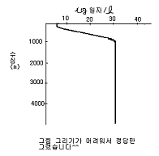
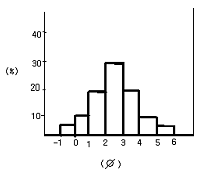

해양조사산업기사 (2006-05-14 기출문제)
1과목: 물리해양학
1. 다음 중 일반적으로 표면해수의 밀도를 감소시키는 것은?
- 강수
- 결빙
- 냉각
- 증발
(정답률: 74%)

2. 해류는 수괴가 이동하는 현상이기 때문에 해류 수괴는 특징을 가지고 있다. 이 특징이 아닌 것은?
- 수색, 투명도
- 수온
- 염분
- 파고
(정답률: 67%)
3. 주태음 반일주조(M2조)의 주기에 해당되는 것은?
- 12시간 25분
- 12시간
- 12시간 40분
- 11시간 55분
(정답률: 96%)
4. 경계류와 해안과의 사이에 계절적으로 혹은 단기적으로 변하는 흐름은?
- 한류
- 연안류
- 주극류
- 환류
(정답률: 82%)
5. 대서양에서 태평양의 흑조(Kuroshio)와 대응할 수 있는 난류는?
- 북대서양 해류
- 래브라도 해류
- 멕시코 만류
- 그린랜드 해류
(정답률: 83%)
6. 다음 해류관측 방법에 관한 설명 중 옳은 것은?
- 알고스(Argos) 부이를 이용하는 것은 오일러(Euler) 방법이다.
- 태평양에서는 라그랑즈(Largrange) 방법이 좋으나 대서양은 오일러 방법이 좋다.
- 심해중립 부이를 이용하는 것은 오일러 방법이다.
- 도플러효과(Doppler effect)의 원리를 이용하는 유속계는 오일러식 유속계이다.
(정답률: 91%)
7. 대양에서는 바람의 영향이나 밀도의 차이에 의해서 해수가 움직이는 것으로 알려져 있다. 다음 중 밀도차에 의하여 움직이는 것으로 가장 거리가 먼 것은?
- 표층수
- 중층수
- 심층수
- 저층수
(정답률: 96%)
8. 대기압을 무시한다면 수심 20m에서의 기압은 약 얼마인가?
- 0.1기압
- 0.5기압
- 1기압
- 2기압
(정답률: 82%)
9. 심해파가 진행될 때 물입자의 운동은?
- 상하수직운동
- 원운동
- 좌우직선운동
- 진행운동
(정답률: 85%)
10. 다음 중 평균 대조차가 큰 항구부터 작은 항구 순으로 바르게 배열된 것은?
- 군산, 목포, 부산, 여수
- 울산, 부산, 묵호, 도동(울릉도)
- 인천, 목포, 거문도, 울산
- 여수, 목포, 거문도, 부산
(정답률: 90%)
11. 물의 흐름과 수평압력 기울기와의 사이에는 밀접한 관계가 있다. 일반적으로 한 면상의 모든 점에 작용하는 중력이 그 면에 수직일 때 이것을 무엇이라고 하는가?
- 연직면
- 수준면
- 수직면
- 수평면
(정답률: 64%)
12. 등조시도(Co-Tidal chart)에 관한 설명 중 옳은 것은?
- 각 항구에서의 예보된 조석곡선
- 조시가 빠른 지역부터 차례로 그린 그림
- 고조시가 같은 곳을 선으로 연결한 그림
- 조차가 큰 지역부터 차례로 그린 조차의 그림
(정답률: 77%)
13. 유의파고(significant wave height)란 파고가 큰 순서로부터 전체 파수의 얼마에 해당하는 파고인가?
- 1/5
- 1/10
- 1/3
- 1/2
(정답률: 78%)
14. 대한해협의 동,서수도를 거쳐 동해에 유입하는 해류는?
- 쓰시마 해류
- 오아시오 해류
- 리만 해류
- 쿠로시오 해류
(정답률: 74%)
15. 다음 중 대륙연안에서 대규모의 용승수를 운반하는 해류는?
- 크롬웰 해류
- 서풍피류
- 캘리포니아 해류
- 만류(gulf stream)
(정답률: 60%)
16. 취송류에 관한 설명 중 틀린 것은?
- 표면에서의 흐름은 북반부에서 풍향에 대하여 대개 오른쪽으로 45°방향으로 흐른다.
- 표면유속은 풍속의 2~4%정도의 속도이다.
- 상부마찰 저항심도는 풍속에 역비례하고 위도의 크기에 비례한다.
- 상부마찰 저항심도는 해수 전체는 북반부에서 풍향의 오른쪽 90°방향으로 흐른다.
(정답률: 90%)
17. 해수 중 음파의 전달속도는 매 초당 얼마인가?
- 약 500m
- 약 1,000m
- 약 1,500m
- 약 2,000m
(정답률: 92%)
18. 세계 대양의 저층수 분포에 가장 크게 영향을 미치는 수괴는?
- 지중해수
- 쿠로시오해수
- 남극저층수
- 래브라도해수
(정답률: 70%)
19. 천해파의 파속과 군속도(group velocity)의 비교가 옳은 것은?
- 파속이 항상 군속도 보다 빠르다.
- 파속은 항상 군속도 보다 늦다.
- 파속과 군속도는 같다.
- 주기와 파장에 따라 군속도 보다 빠를 수도 늦을 수도 있다.
(정답률: 85%)
20. 다음 중 해류계인 것은?
- LORAN
- G.E.K
- RADAR
- CTD
(정답률: 76%)
2과목: 화학해양학
21. 해양오염물질 중 생물농축이 될 수 있는 중독성 물질이 있다. 다음 중 생물농축과 관련이 없는 것은?
- 비소
- 아연
- DDT
- 인산염
(정답률: 82%)
22. 다음 중 해양에서 식물성 플랑크톤 번식에 사실상의 제한 인자가 아닌 것은?
- 인산염
- 질산염
- 규산염
- 아질산염
(정답률: 63%)
23. 표층해수의 평균적인 수소이온 농도(pH)는 약 얼마인가?
- 6.8
- 7.5
- 8.2
- 9.0
(정답률: 84%)
24. 다음 그림에서 대양에서의 질소의 수직 분포도를 나타내는 것은?

- 복원중 (정확한 내용을 아시는분 께서는 오류 신고를 통하여 내용작성 부탁 드립니다.)
- 복원중 (정확한 내용을 아시는분 께서는 오류 신고를 통하여 내용작성 부탁 드립니다.)
- 복원중 (정확한 내용을 아시는분 께서는 오류 신고를 통하여 내용작성 부탁 드립니다.)
- 복원중 (정확한 내용을 아시는분 께서는 오류 신고를 통하여 내용작성 부탁 드립니다.)
(정답률: 39%)
25. 해수 중에 용존 되어 있는 가스 중에서 가장 많은 것은?
- 산소
- 질소
- 탄산가스
- 황화수소
(정답률: 60%)
26. 해수 중에 존재하는 콜로이드에 관한 설명 중 가장 거리가 먼 것은?
- 교질상태로 존재한다.
- 해수에 용해되어 있지 않는 물질이다.
- Tyndall 현상을 일으켜 빛을 산란시키는 특징을 갖고 있다.
- 해수 중 농도는 매우 높은 편이다.
(정답률: 69%)
27. 다음의 해수 조성에 관한 설명 중 틀린 것은?
- 해수의 화학적 성분의 상대적인 비는 염분이 변화 해도 일정하다.
- 질소, 인, 규소 등 생물과 관련된 원소들은 표층수보다 저층수에 높게 분포한다.
- 알칼리금속은 98% 이상이 유리이온으로 존재한다.
- 알칼리 금속 및 알칼리 토금속의 평균체류시간은 극히 짧다.
(정답률: 65%)
28. 연안수 부영양화(富榮瀁化)의 가장 직접적인 원인은?
- 기름유입
- 도시폐수의 하수유입
- 용승현상
- 심층수유입
(정답률: 77%)
29. 해수 중 평균체류시간이 가장 긴 원소는?
- AI
- Ca
- P
- Si
(정답률: 57%)
30. 열수는 해수에 여러 가지 원소를 공급하기도 하지만 제거하기도 한다. 거동이 나머지와 다른 원소는?
- 황
- 철
- 마그네슘
- 리튬
(정답률: 44%)
31. 윙클러방법에 의하여 적정되는 해수 용존기체는?
- H2
- O2
- CO2
- NO2
(정답률: 62%)
32. 해수 중 화학성분의 공급(유입량)과 제거(제거량)가 평형이 되어 시간에 따른 농도의 변화가 없는 상태 무엇이라 하는가?
- 체류상태
- 정상상태
- 폐쇄상태
- 열린상태
(정답률: 85%)
33. 다음 중 해수 중의 암모니아 측정법으로 사용되는 방법은?
- Cd-Cu 환원법
- 인도페놀법
- GR법
- 윙클러법
(정답률: 75%)
34. 해수의 염분을 측정하는 것은 매우 중요한 일이다. 다음 중 현재 가장 많이 쓰이는 염분 측정법은?
- 밀도
- 온도
- 전기전도도
- 굴절율
(정답률: 75%)
35. 용존산소가 완전히 소모된 저층수에서는 미생물에 의해 SO4- 의 환원이 일어난다. 이 때 생성되는 것은?
- SO3-
- SO2
- H2S
- S2O3-
(정답률: 79%)
36. 해수에서 다음 질소원소 중 식물플랑크톤에 가장 우선적으로 취해지는 것은?
- NH4+
- NO2-
- NO3-
- N2
(정답률: 67%)
37. 해수는 각종의 염류를 포함하는 강 전해질 용액이다. 전해질 강도를 이온강도로 나타낼 때 염분도 35‰의 해수의 이온강도는 대략 얼마인가?
- 1.0
- 0.7
- 7.0
- 0.07
(정답률: 67%)
38. 유류(油類)오염이 해양환경에 주는 영향을 설명한 것 중 잘못된 것은?
- 광 차단으로 광합성 저해
- 연안해역의 부착생물의 질식가능
- 어류의 서식지 회피
- 해양과 대기간의 기체교환속도 증가
(정답률: 88%)
39. 일본의 미나마타(Minamata)만 사건의 원인이 되었던 오염 물질은?
- 수은
- 카드뮴
- 크롬
- 납
(정답률: 79%)
40. 해수 중 원소의 평균체류시간을 계산하는 식은?
- 유입속도 - 현존량
- 현존량 ÷ 제거속도
- 제거속도 ÷ 현존량
- 유입속도 × 현존량
(정답률: 86%)
3과목: 생물해양학
41. 나노플랑크톤(Nanoplankton)은 어느 정도의 크기인가?
- 0.2 ~ 2.0㎛
- 0.2 ~ 20㎛
- 0.02 ~ 0.2㎛
- 2.0 ~ 20㎛
(정답률: 56%)
42. 겨울철 식물플랑크톤의 증식이 활발하지 못한 주 요인은?
- 수온
- 염분
- 영양염
- 광선
(정답률: 75%)
43. 적조 발생 설명으로 틀린 것은?
- 적조란 식물플랑크톤이 급격히 대량 번식하여 해수를 변색시키는 현상이다.
- 적조는 어패류를 폐사시키는 한 원인이 된다.
- 적조는 부영양화에 따라 발생된다.
- 적조는 정체수역에서는 발생하기 어렵다.
(정답률: 74%)
44. 다음 어류 중 강하성회유(catadromous migration)를 하는 어종은?
- 송어
- 뱀장어
- 은연어
- 방어
(정답률: 77%)
45. 어류의 크기를 나타내는 방법 중 표준체장은?
- 몸 앞끝에서 꼬리지느러미 뒤끝까지의 직선거리
- 주둥치 앞끝에서 꼬리지느러미 기저까지의 직선거리
- 주둥치 앞끝에서 꼬리지느러미의 오목한 안끝까지 직선거리
- 주둥치 앞끝에서 등지느러미의 끝까지의 직선거리
(정답률: 84%)
46. 다음은 해양생태계와 육상생태계를 비교한 설명이다. 이 중 틀린 것은?
- 해양에는 부유생물이 존재하고 이를 섭취하는 여과식자가 있다.
- 해양생물은 육상생물에 비하여 체내에 탄수화물의 함량이 높다.
- 해양생물은 육상생물에 비하여 먹이 전환효율이 높다.
- 대부분의 해양식물 및 초식자는 육상에 비하여 크기가 작다.
(정답률: 77%)
47. 먹이연쇄과정 중 대사물질에 의해 분해되지 않는 고형물질의 농축현상을 잘 표현하고 있는 것은?
- 농축물질은 저영양단계에서 많다.
- 농축물질은 고영양단계에서 적다.
- 농축물질은 영양단계와는 관계가 없다.
- 농축물질은 고영양단계의 생물에 치명적인 영향을 준다.
(정답률: 63%)
48. 보상심도(Compensation depth)에서 광합성에 의하여 생산된 O2의 양과 호흡에 의하여 소비되는 O2 양의 관계는?
- 생산된 O2의 양과 소비된 O2의 양이 같다.
- 광합성으로 생산된 O2의 양이 많다.
- 호흡에 소비되는 O2의 양이 많다.
- O2의 양과는 관계가 없다.
(정답률: 91%)
49. 다음 중 여과섭이(Filter feeding)를 하지 않는 동물은?
- 재첩
- 따개비
- 우렁쉥이
- 화살벌레(모악동물)
(정답률: 64%)
50. 해양에 서식하는 저서동물 중 서식밀도가 가장 높은 것으로 알려진 종류는 갯지렁이(다모류)이다. 이에 대한 설명으로 가장 거리가 먼 것은?
- 크기가 대형이며, 주로 육식성이다.
- 몸은 좌우대칭이며, 내 ㆍ 외부적으로 체절성이다.
- 대부분 부유성 담륜자 유생시기를 거친 후, 변태하여 저서생활을 시작한다.
- 유기물오염이 심화된 해역에서 대량으로 서식하기도 한다.
(정답률: 58%)
51. 가다랑어 또는 방어의 체형은?
- 방추형(fusiform)
- 장어형(anguilliform)
- 구형(globiform)
- 편평형(depressed form)
(정답률: 85%)
52. 다음 중 해양저서동물의 특징에 대한 설명으로 틀린 것은?
- 저서동물은 전 생활사 기간 동안 저서생활을 하기 때문에 천 m 깊이의 심해에서도 서식이 가능하다.
- 바위와 같은 딱딱한 기질에 서식하는 저서동물은 대부분 부착성이 많다.
- 저서동물은 서식형태에 따라 기질의 표면에 사는 표서 동물과 기질의 내부에 사는 내서동물로 크게 구분할 수 있다.
- 뻘이나 모래에 서식하는 저서동물의 대부분은 퇴적물식자나 부유물식자이다.
(정답률: 75%)
53. 다음 중 뱀장어의 유생은?
- 에키노플루테우스
- 렙토세팔루스
- 아우리클라리아
- 미시스
(정답률: 67%)
54. 육상동물에는 전혀 유연(類緣)이 없는 해산동물은?
- 갑각류(Crustacea)
- 연체류(Mollusca)
- 모악류(Cheatognatha)
- 규조류(Diatom)
(정답률: 61%)
55. 수압과 생물의 영향에 관한 설명 중 맞는 것은?
- 해수압과 생물은 무관하다.
- 가스의 용해도와 수압의 관계에 의해 간접적으로 생물에게 영향을 끼친다.
- 해수압은 생물 조직에는 영향을 주지 않는다.
- 어류의 부레는 해수압과 무관하다.
(정답률: 87%)
56. 해수의 염분도와 해양생물의 관계를 설명한 내용 중 틀린 것은?
- 해수의 염분도는 일반적으로 해양생물에 영향을 미친다.
- 해양생물 중에는 담수에 옮겨졌을 때 재빨리 적응하는 능력을 가진 것이 있다.
- 염분 변화의 생리적 영향은 온도에 따라 다르다.
- 외양성 생물은 연안역에서 서식하는 생물보다 일반적으로 염분변화에 내성이 크다.
(정답률: 81%)
57. 외양 생태계에서 가장 우세한 기초 생산자는?
- 남조류
- 규조류
- 갈조류
- 대형 녹조류
(정답률: 72%)
58. 다음 중 기초 생산의 정의에 가장 가까운 것은?
- 어류의 생산
- 동물성 플랑크톤의 생산
- 태양에너지가 고정되어 유기물이 합성되는 생산
- 규조류의 생산
(정답률: 80%)
59. 다음 생물 중 유영생물(nekton)에 속하는 것은?
- Sagitta
- 뱀장어
- 피조개
- 참굴
(정답률: 77%)
60. 다음 중 원생동물에 속하는 생물로 짝지워진 것은?
- 화산벌레, 연두벌레
- 닻벌레, 바퀴벌레
- 짚신벌레, 해삼
- 야광충, 연두벌레
(정답률: 63%)
4과목: 지질해양학
61. 다음 중 대륙붕의 설명과 가장 거리가 먼 것은?
- 붕단의 평균 수심은 130m 정도이다.
- 환초(atoll)가 많이 발견된다.
- 많은 생물이 있으며 경제적으로 매우 중요하다.
- 바다 쪽의 한계는 구배가 급히 변하는 곳이다.
(정답률: 64%)
62. 다음 중 퇴적물의 퇴적속도가 가장 빠른 장소는?
- 하구
- 해협
- 내만
- 외양
(정답률: 87%)
63. 퇴적물을 입도 분석한 결과 의해 다음과 같은 막대 그림표를 그렸다. 다음 설명 중 가장 옳은 것은?

- 실트(silt)로 분류되며 분급도는 양호한 편이다.
- 실트(silt)로 분류되며 분급도는 불량한 편이다.
- 모래(sand)로 분류되며 분급도는 양호한 편이다.
- 모래(sand)로 분류되며 분급도는 불량한 편이다.
(정답률: 60%)
64. 해록석(glauconite)에 대한 설명 중 가장 옳은 것은?
- 천연가스를 함유하는 암석의 일종이다.
- 해양환경에서만 생성되는 화학적 기원의 점토광물이다.
- 연대측정에 사용되는 암석이다.
- 주로 심해저에서 발견되는 화산기원의 암석이며 녹색을 띤다.
(정답률: 57%)
65. 다음 해양퇴적물의 일반적 내용 중 틀린 것은?
- 퇴적물은 주로 성분과 조직을 기초로 하여 분류한다.
- 퇴적물의 성분과 조직은 퇴적물의 근원과 퇴적환경을 지시한다.
- 퇴적물의 조직은 주로 퇴적물과 물운동과의 관계를 지시한다.
- 해저에는 예외 없이 퇴적물이 발달되어 있다.
(정답률: 68%)
66. 해저에서 석유자원은 주로 어떤 지층에서 생성되는가?
- 화산암
- 화성암
- 변성암
- 퇴적암
(정답률: 75%)
67. 해빈의 퇴적구조 설명 중 틀린 것은?
- 작은 규모의 층리가 발달되어 있다.
- 연흔, 스워시 마크 등도 발견된다.
- 평행층리는 조립질 물질로 된 해빈 퇴적물층에서 대단히 잘 발달한다.
- 파도에 의한 연흔과 해부에 의한 연흔은 연근처에서 나타난다.
(정답률: 58%)
68. 망간단괴(manganese nodule)가 가장 많이 발달하는 곳은?
- 수심 100 ~ 200m의 해저
- 수심 30 ~ 70m의 해저
- 수심 1000 ~ 1500m의 해저
- 수심 4000 ~ 5000m의 해저
(정답률: 80%)
69. 다음 삼각주에 대한 설명 중 틀린 것은?
- 삼각주는 강의 퇴적물 운반량은 적은 반면, 파도나 연안류의 활동이 강할 때 형성된다.
- 삼각주는 해안에서 바다 쪽으로 연장되어 성장하므로 불쑥 나온 모양을 가지게 되어 거의 3각형과 유사하게 된다.
- 삼각주 퇴적층은 육성퇴적물로 구성되며 주로 실트와 점토로 구성되어 있다.
- 삼각주 퇴적층은 상부층, 중부층, 하부층으로 구성되며 구성부분에 따라 조직과 성분의 변화가 확실하다.
(정답률: 71%)
70. 다음 중 수심이 가장 깊은 곳은?
- 해령
- 심해저 평원
- 해구
- 기요
(정답률: 66%)
71. 지구의 구성 중 암권 및 내권은 뚜렷한 세 구조로 나타낸다. 이들 세 구조에 속하지 않는 것은?
- 지각(crust)
- 맨틀(mantle)
- 열권(thermosphere)
- 핵(core)
(정답률: 78%)
72. 다음 중 유기적 퇴적암이 아닌 것은?
- 석회암
- 규조토
- 석탄
- 철광층
(정답률: 73%)
73. 다음 중 해저에 부설된 케이블을 찾는데 효과적이지 않은 탐사 방법은?
- 음파탐사
- 사이드 스캔소나 탐사
- 해저 T.V
- 중력탐사
(정답률: 75%)
74. 해빈(beach) 퇴적물을 이루는 광물 중 가장 흔한 것은?
- 감람석
- 에피도르
- 석영
- 각섬석
(정답률: 89%)
75. 대륙주변부에 포함되지 않는 해저지형은?
- 대륙붕(continental shelf)
- 대륙대(continental rise)
- 대양저(abyssal floor)
- 대륙사면(continental slope)
(정답률: 80%)
76. 해빈사의 이동에 가장 큰 영향을 미치는 것은?
- 파랑
- 조석
- 연안류
- 해류
(정답률: 67%)
77. 일반적인 해저지형을 육지에서 바다 쪽으로 나열한 것 중 옳은 것은?
- 대륙붕 → 상부대륙대 → 대륙사면 → 하부대륙대
- 대륙붕 → 대륙사면 → 대륙대 → 심해평원
- 대륙붕 → 대륙대 → 대륙사면 → 심해평원
- 대륙사면 → 대륙대 → 대륙붕 → 심해평원
(정답률: 64%)
78. 다음 기기 중 심해저 퇴적물의 시료 채취용이 아닌 것은?
- dredge
- auger driller
- piston core sampler
- grab type sampler
(정답률: 59%)
79. 퇴적물의 물리적 성질이 아닌 것은?
- 공극율(Porosity)
- 밀도(Density)
- 열유량(Heat flow)
- 탄성파 속도(Compressional Velocity)
(정답률: 69%)
80. 다음 중 생물기원 퇴적물과 관련이 없는 것은?
- 석회질 연니
- 규산질 연니
- 해면류
- 불석
(정답률: 78%)